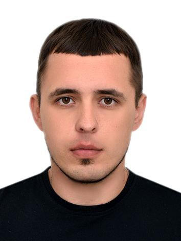

Kuklin Aleksandr / WDD130
Hello everyone! I'm Kuklin Aleksandr currently live in Georgia, russian originally.I like sport and hicking and i'm working as an automation engineer
Hello everyone! I'm Kuklin Aleksandr currently live in Georgia, russian originally.I like sport and hicking and i'm working as an automation engineer